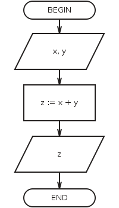

I/O - Input/Output (information science) is the interaction between handler of information (for example, computer) and the external world, which can be human or any other information processing system.
Input is signal or data, which were received by system, and output is signal or data, which were sent by system (or from system).
Output for counting sum (picture from the program):
